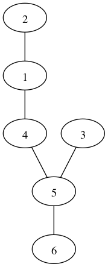

Here you can either decode the sequence of numbers into a graph image or encode a graph
using a graphic interface. You will have to install Python 3 with such libraries as tkinter and pygraphviz first.
The Prüfer algorithm is a graph theoretical algorithm that generates a unique label, called the Prüfer sequence (or code),
for a labeled tree with n vertices. The algorithm was introduced by Heinz Prüfer in 1918.
The algorithm works as follows:
1. Find the leaf node with the smallest label in the tree and remove it along with its incident edge.
2. Add the label of the node to the Prüfer sequence.
3. Repeat steps 1 and 2 until only two nodes remain in the tree.
At the end of the algorithm, the Prüfer sequence contains n-2 integers between 1 and n, which uniquely represent the labeled tree.
The algorithm can be reversed to reconstruct the original tree from its Prüfer sequence.
Here you can get a sequence of numbers representing the Prüfer code for the given graph.
Here you can get an image of the graph matching given Prüfer code.
With code being {1, 4, 5, 5}
